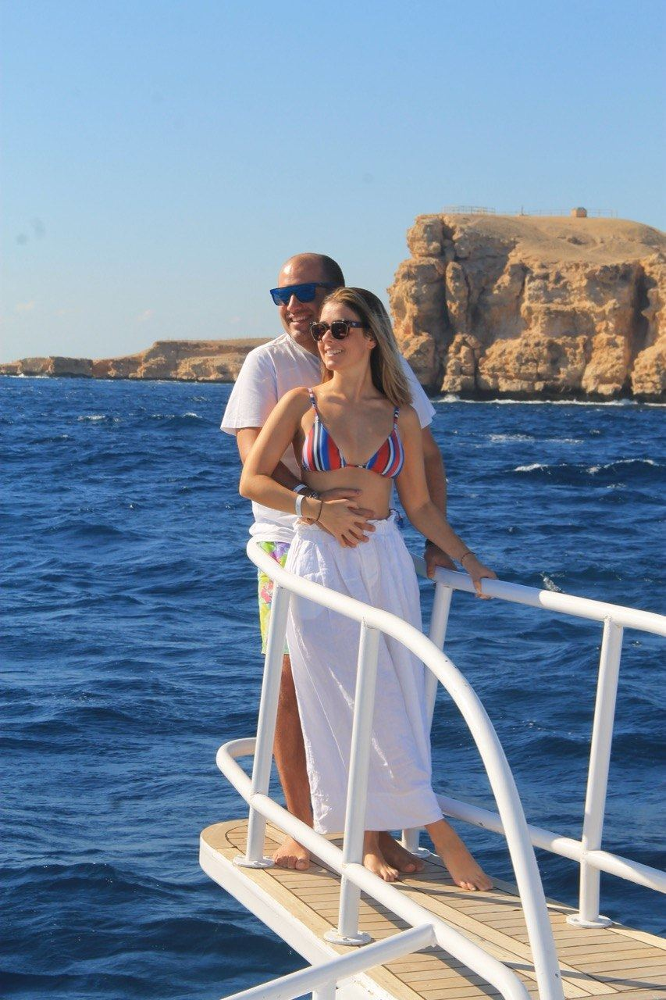
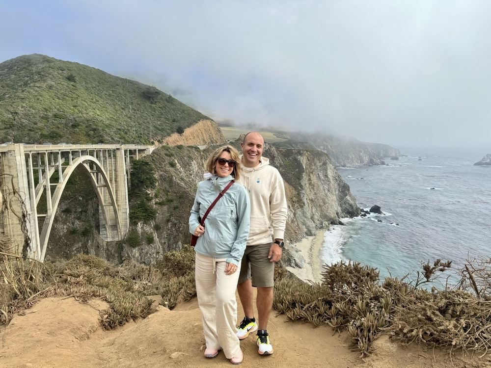
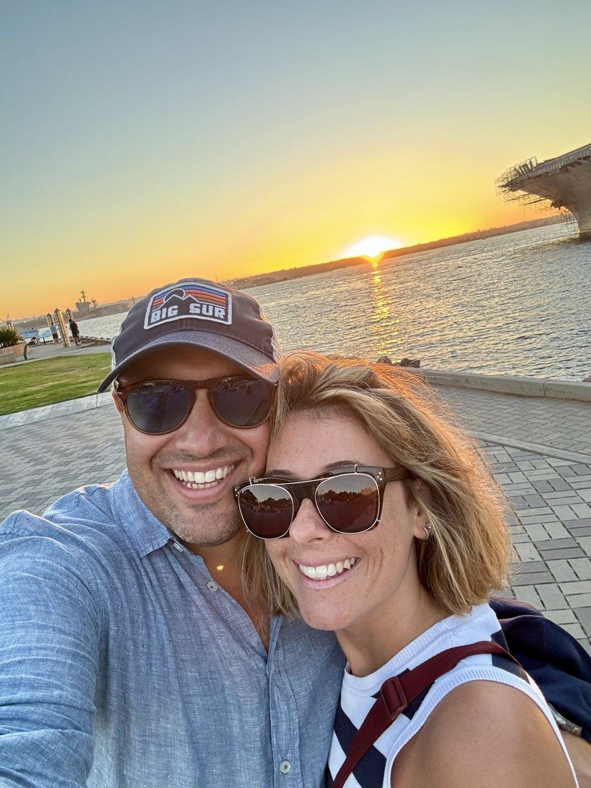
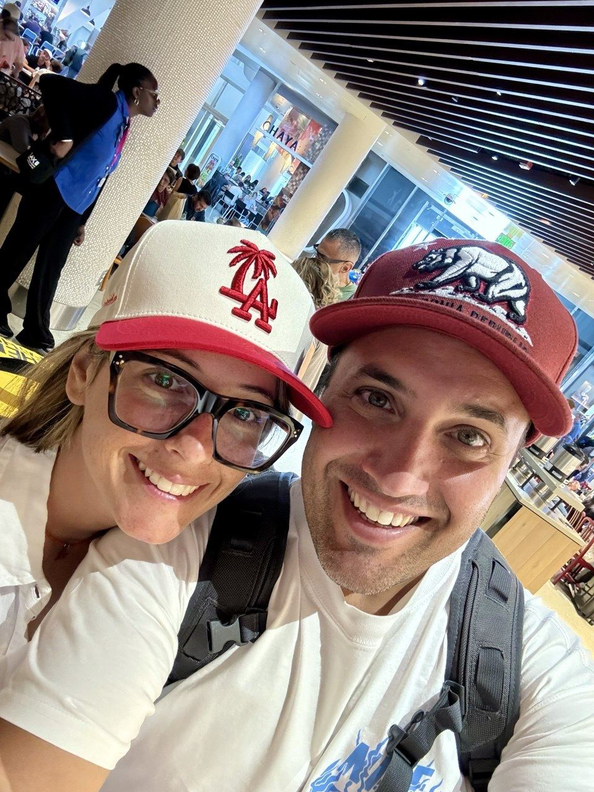
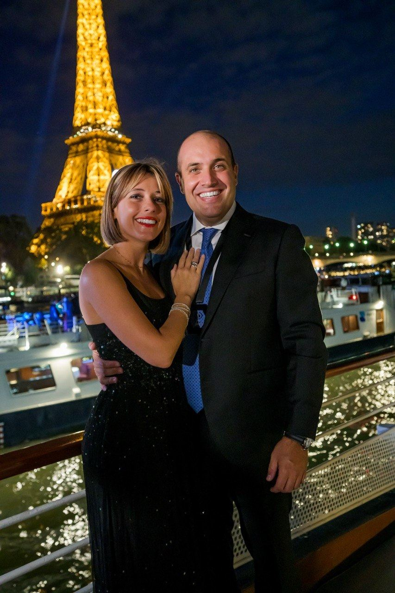
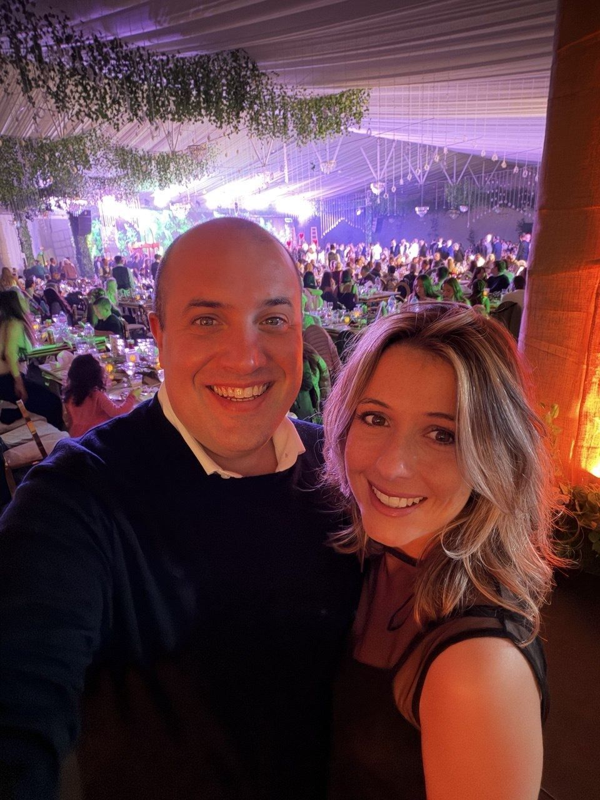

Un po' di noi







La nostra storia
Giorgio è cresciuto tra le rive del Lago di Como, un territorio che gli ha insegnato la bellezza della lentezza e l'importanza delle radici.
Curioso di natura, amante del bello e delle cose fatte con cura, porta in tutto ciò che fa un'attenzione ai dettagli che lo contraddistingue.
Tra i suoi momenti preferiti ci sono le uscite in auto lungo strade che si snodano tra i monti, le serate con gli amici di sempre, e il calcio visto con la stessa passione di un bambino.
Ha un debole per i viaggi che lasciano il segno — quelli in cui si torna con le scarpe consumate e la testa piena di immagini.
Lucrezia è di quelle persone che illuminano una stanza senza nemmeno accorgersene.
Ha un modo tutto suo di guardare il mondo — con entusiasmo genuino, con grazia, con quella leggerezza che non è superficialità ma talento raro.
Ama la natura, i fiori e le cose che profumano di primavera. Trova la felicità nelle piccole cose: una colazione in terrazza, una risata improvvisa, un tramonto sul lago.
Sogna in grande e ama con tutto il cuore — ed è proprio questo che ha fatto innamorare Giorgio, perdutamente.
Insieme
Due storie che si incontrano, si riconoscono, e decidono di diventare una sola. Il 12 settembre 2026 è il giorno in cui tutto questo diventa ufficiale — davanti a Dio, alla famiglia e agli amici più cari.
Un po' di noi




